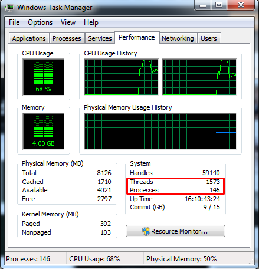
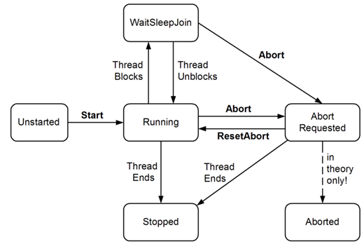

C# course
Lecture 13
Multithreading in C#
Agenda
- Introduction and Concepts
- Threads
- Creating and starting threads
- Thread lifecycle
- Error handling
- Thread Pooling
- Synchronization concepts
- Immutable objects and synchronization
What is multithreading
Multithreading - parallel execution of code, leveraging threads.
C# enables multithreading using following namespace:
1:
|
using System.Threading;
|
When to parallel?
When multithreading might be useful?
- there are few independent tasks that do not intersect (usually calculation)
- separate heavy calculation from UI (to avoid freezes)
- constantly query external service and notify application if new data arrived
- to avoid stop processing waiting for user's input
- separating processing workflow by threads (collect - filter - process - save)
When not to parallel?
When multithreading might be awkward?
- when number of threads is big enought
- when modules are tightly coupled and there are a lot of commmon data across modules (refactor first)
- when it won't bring any value (switching threads is a heavy operation)
Thread
- a thread is an independent execution path, able to run simultaneously with other threads and can be managed independently by a scheduler
- threads might run in parallel on differen physical cores or creatign multicore illusion (preemptive or context switching)
Context switching

Threads vs Processes
Do not mix Threads and Processes

Thread vs Process - Processes
Thread - execution path within a process
- contains running code
- share memory of containing process
- share resources dedicated for containing process
- has own stack withing process memory
- requiere synchronization
Thread vs Process - Threads
Process - is an instance of a program
- each process has own dedicated memory space
- contains at least 1 thread
- few processes might represent the same program
- syncronization almost not required
Example of code with multiple threads
Threads in C#
Threads are represented in C# by class Thread
1:
|
System.Threading.Thread
|
Constructors:
Run parameterless method in separate thread
1:
|
Thread(ThreadStart)
|
Run method with an object-type parameter in separate thread
1:
|
Thread(ParameterizedThreadStart)
|
Creating and running threads
Thread should be created with an entry point when new thread will start execution.
This entry point is outlined by following delegates:
1: 2: |
public delegate void ThreadStart();
public delegate void ParameterizedThreadStart(Object obj);
|
Once thread created it should be run for execution:
1: 2: |
var thread = new Thread(someEntryPoint);
thread.Start();
|
Thread lifecycle

Thread lifecycle details

Stopping and aborting threads
There are a number of ways to stop thread:
- Let thread exits by itself
- Let thread dead by natural causes (exit from entry method)
- Call Thread.Abort() method (depricated)
- Call Thread.Suspend() method (depricated)
- Call Thread.Interrupt() method to exit from SleepWaitJoin state
Thread characteristics
- background vs foreground threads (IsBackground)
- thread could be named with property Name - example
- thread execution priority (Priority)
- state of a thread (ThreadState)
{kind=link}
Error handling
- exception could be cought within a thread (not outside it)
- unhandled exception occured at any thread terminates entire application
- it does not make sense to catch ThreadAbortException (caused by Thread.Abort() method)
- you can catch globally unhandled exception by event AppDomain.CurrentDomain.UnhandledException, however it's impossible to prevent application from closing
Thread pooling
Creating thread consumes is an expensive operation. Thread pool cuts these overheads.
Ways to enter the thread pool:
Thread pooling - schema

Common synchronization problems
- atomicity - make critical code atomic
- visibility - if read/write operations are in diff threads, no guarantee that reading thread will read written value
- reordering - code order might be changed by CLR - this might be critical for app logic
- race condition - occurs when correctness of computation depends on data access time
- livelock - thread fails operation and returns data for re-processing
- starvation - mutual lock caused by inapropriate thread priorities
- deadlock - mutual lock of 2 or more threads
Synchronization primitives
- Simple blocking methods
- Locking constructs
- Signaling constructs
- Nonblocking synchronization constructs
- volatile keyword
- Interlocked class
use immutable objects
Simple blocking methods
- Sleep - pause thread execution for specified time
- Join - invoking thread pauses until other thread finish its execution
Locking
Exclusive locking is used to ensure that only one thread can enter particular sections of code at a time
- lock (Monitor.Enter \ Monitor.Exit) - lock example, Monitor example
- mutex - example
- semaphore - example